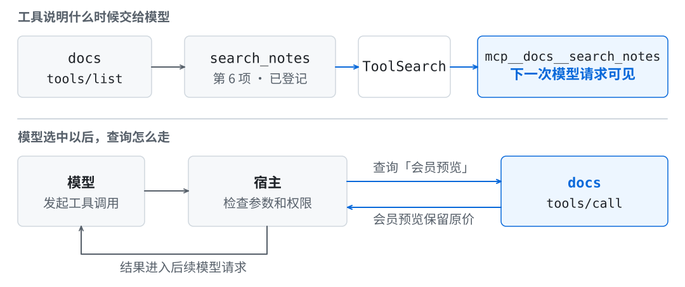

接入 MCP 后，模型怎样真正查到外部资料
你让 agent 查资料库里的会员预览说明。终端说资料服务 docs 已连接，第一份发给模型的工具清单里却没有查询接口。模型先找到了工具，又查到了“会员预览保留原价”。这两次动作分别问了谁？
服务连上了，查询工具还在哪儿？
下面按源码推演。上一章给模型看的 Skill 可以约定先查说明、再写复核备注。这次说明存在另一个服务里，得先问那台服务肯提供哪些操作，再选一个来用。宿主和服务拿来做这两件事的协议叫 MCP。模型通过函数调用（function calling）把想用的工具和参数告诉宿主。
先看连接后的第一个结果。面板显示连接成功，表示宿主能和服务对话。要解释为什么模型开头找不到查询工具，接下来检查两份清单：服务列给宿主的工具，和宿主放进模型请求的工具。
服务交来的是目录，模型要用的是工具
宿主通过本地子进程的标准输入输出、Streamable HTTP 或配置的 SSE 通道连上 docs，先发 initialize 确认对端支持什么，再用 tools/list 要工具目录。目录里有一项叫 search_notes，它的 inputSchema 要求必填的 query 是字符串。宿主把它登记成 mcp__docs__search_notes，以后碰到同名的 search_notes，可以凭中间的服务名分清交给谁。握手 · 登记工具

图下半行是模型真正选中查询以后发生的事。模型提出 mcp__docs__search_notes 和 {"query":"会员预览"}，宿主按本地工具路径检查参数和权限。到了处理器，宿主向 docs 发 tools/call，参数是 {"name":"search_notes","arguments":{"query":"会员预览"}}。服务列表里那份说明到这时才变成一趟查询。
服务在握手时还可以声明资源或提示词模板。若存给这些能力挂上专用工具，例如先列资源，再按 URI 取内容。服务发来列表更新通知时，程序重新取定义，并确认请求回来时还是原来那条连接，才替换注册项。资源和模板 · 列表更新
这里有个容易误会的地方。docs 说 query 必须是字符串，宿主保存这份说明给模型，却只在本地检查传入的是一个 JSON 对象。下面代码中的 schema 和 apiParameters 就是这两份约定。
src/ruocun/mcp/mcp.py · 第 549–559 行
def _tool(self, server: str, connection: _Connection, definition: Mapping[str, Any]) -> Tool:
name = definition["name"]
parameters = copy.deepcopy(definition.get("inputSchema", {"type": "object", "properties": {}}))
async def handler(arguments: dict[str, Any], ctx: ToolContext) -> str:
result = await self._invoke(connection, "tools/call", {"name": name, "arguments": arguments}, ctx)
return result if isinstance(result, str) else unpack(result)
return Tool(name=f"mcp__{server}__{name}", description=definition.get("description", f"MCP {server} 工具 {name}"),
schema={"type": "object"}, apiParameters=parameters, capability="network",
handler=handler, persistentEffect=True)把参数换成 ["会员预览"]，本地对象校验就会拒绝，处理器还没运行。换成 {"keyword":"会员预览"}，本地形状过关。若权限也允许，资料服务拿到请求后仍可指出缺少 query。这台服务的字段要求由服务自己落实，同一个字段换名的问题不会因为适配成了本地工具便消失。回看工具的两份契约
已登记的查询工具，模型还得找一次
回到第一份模型请求。假设现在有七项远端工具，search_notes 是第六项。注册表留着七份完整定义，起初只把前五项 MCP 工具放进可见集合。模型可请 ToolSearch 搜 search_notes。本地注册表按名称或描述查找，把命中的名字加入可见集合，返回命中的工具名和描述。接下来正常模式构造模型请求，才会把找到的工具按完整参数定义放进去。看初始入表 · 看搜索激活
把同一份七项工具交给 CoreCoder。扩展篇把发现的远端工具和其他工具一并注册，_tool_schemas() 按这份列表给模型发定义。查笔记马上能做，每个请求也带着其余六项。若存为后来才用到的那一项加了一趟搜索。Claude Code 在支持延迟加载时也能用搜索，配置 alwaysLoad: true 还可以整台服务预先装载。若每天第一步都是查笔记，预装省下一次找工具；若只偶尔查，再为六项额外接口预留空间就得看它们值不值。CoreCoder 扩展篇 · Claude Code 预先装载配置
如果模型上一轮还搜到了写备注的 append_note 呢？只换一个条件，现在进入计划模式。生成下一次请求时，工具清单会排除 MCP；即便模型照着旧消息里的名称再提一次，派发前也要复查当前模式，把拒绝原因按原调用回给模型。资料服务不会收到这次追加。搜索解决的是定义如何到达模型，写入是否获准还要走执行时的判断。清单过滤 · 派发关口
查到了原价，追加备注时却没有回包
回到正常模式。查询发出后，docs 的 content 里有一段文字“会员预览保留原价”。适配器取出文字，主循环把它配回模型的查询编号，模型才有资料可答。此后用户要求向资料库追加一句“过期会员需复核”。模型给这次追加的编号是 c42。宿主已经交出请求，等回包时连接断了。
如果程序接到调用时连接已经关了，仍可确认没有发出请求。若等待期间收到了能对上的服务端协议错误，程序可以把错误回给模型，服务是否已改变数据仍要按错误含义判断。c42 恰好落在另外一格：调用已走进通信阶段，宿主手里连能对上的答复都没有。
src/ruocun/mcp/mcp.py · 第 537–547 行
except _NotSent as error:
raise ToolRejected(str(error)) from error
except _ProtocolRejected as error:
return "Error: MCP " + self.redact(str(error))
except (Exception, asyncio.CancelledError) as error:
if not work.done():
work.cancel()
await asyncio.gather(work, return_exceptions=True)
if isinstance(error, UnknownToolOutcome):
raise
raise UnknownToolOutcome(f"MCP 请求可能已执行但结果未确认（{type(error).__name__}）；现场保留，未自动重放。") from error断线或超时会走到 UnknownToolOutcome，主循环停在 outcome_unknown，带持久执行记录的会话会留下这次调用的意图。本地的 c42 用来查这次模型提议与执行记录。通信协议另有编号，用来把发出的请求和收到的回包配起来。就算知道两个编号，远端是否多了一条备注，仍要看服务留下的证据。看主循环如何停下 · 回看执行意图与结果
连接恢复后，查询可以继续，c42 那条旧写入仍少一份回执。「可能已经写入的调用，先查原操作留下的证据，再决定是否补做。」 两条字面相同的备注可能分别来自两个任务。要找的是能对应 c42 的远端业务标记或审计记录。确认这次已经写入就不要再追加。只查到同样文字而对不上来源时，仍应保留未决。
重开会话能不能直接把新任务交给模型？现有用例让模拟服务先记下一次写入，再丢掉回执。本地留下 outcome_unknown 后，用另一条用户输入尝试续聊。用例断言模型请求数没有增加，服务端也仍只写过一次。重开程序没有替这笔写入作确认，也没有给模型一次补写的机会。查看重开前后的请求数和写入计数（项目回归测试）
如果掉线的只是同一份会员说明的查询，取舍就变了。HTTP 服务若已把查询工具标为只读，而调用在连接关闭时还没收到答复，Claude Code 允许在新连接上重试一次，省去一次人工续接。若存的适配器把远端工具统一按可能留下持久效果处理，readOnlyHint 不改变缺回执时的分支。这会暂停一部分本可重查的请求，换来一个统一的恢复规则。若用户只需要现在的说明，可以把它当作一趟新的查询，交代读的是哪一次，原回执仍未确认。Claude Code 官方文档 · 可重复调用的工具
交给后台以后，谁持有那条连接？
现在让一个专门查资料的子代理接手。它只打开角色配置选中的服务，持有自己的连接管理对象。要把这趟复核从前台转交给后台，旧执行器最终会关闭自己打开的连接。带过去的应是配置、旧工具定义和曾经可见的名称。后台创建自己的连接，才能独立继续和收尾。保存定义和可见名称
设原来 append_note 用 note_id 定位记录，重连后的同名工具却要求 document_id。后台若直接沿用旧任务，先前构造的参数已经对不上。看看连接成功以后还要等哪处判断。
src/ruocun/agent/agent_mcp.py · 第 47–56 行
try:
await self.manager.init()
if self._expected is not None:
if self._schemas() != self._expected:
raise ValueError("原子代理 MCP 工具定义已变更，未交接执行。")
self.registry.restoreMcpVisibility(self._visible)
self._opened = True
except BaseException:
await self.close()
raise新连接拉下来的定义和旧快照不同，程序会停止此次交接并关闭新资源，旧参数也就不会发出去。定义一致后，先前可见的名称才会被恢复。对上定义只确认接手时还能使用原接口。c42 是否写过仍要沿原执行证据查。
没拿到回包，后来却查到了写入
假设发出 c42 时，业务请求另带了标记 review-42。后台接手时，资料服务的审计表显示 review-42 已给目标笔记加上“过期会员需复核”。此时重新连接 docs，发现同名追加工具已把 note_id 换成 document_id。你会补发备注、允许原任务继续，还是各自留下什么结论？
核对你的判断
审计记录支持判定原备注已写入，无需重发。把审计记录作为来源保存，有意图但没收到原回包的事实仍照实记录。新旧接口不一致，原子代理交接不能继续。若还要做后续工作，应先明确旧任务的恢复决定，重新按已核实的新接口安排余下工作。
这一章带走什么
- 资料服务已连上，模型仍可能要多搜一次才能用到查询工具。把少用工具的完整定义留到搜索之后，平时能少带几份说明，第一次用要多等一趟。
- 宿主验过“这是个对象”，服务还要验“里面有没有
query”。写成keyword就可能在本地过关、到服务端被拒。 - 重新连上以后可以发新查询。旧备注究竟写进去没有，还得找能对应原调用的记录。后台要接手原任务，还得把新连接里的工具定义和旧快照比一遍。
查到资料之后，接着要写一份核对报告。如果 Hook 在动手前换了写入路径，原来的正文和批准还能沿用吗？
面经自测
项目怎样找到要用的 MCP 工具，又从哪个接口开始调用？
百度 · 一面 · 面经原帖 · 题意转述
展开参考回答
宿主先和服务协商能力、列出工具、再发起调用。模型只需要按看见的工具说明选名称和参数。
若存连接资料服务后用 tools/list 找到查笔记的工具，按需把说明给模型，再用 tools/call 把查询交给远端，结果按原调用返回。
MCP 和函数调用分别负责什么？
字节跳动 · 一面 · 面经原帖 · 题意转述 可回看 第 6 章 第 3 章
展开参考回答
函数调用说明模型怎么开口要用工具。MCP 说明宿主怎样联系外部服务去完成它。模型提出查资料，真正给资料服务发请求的是宿主。
接了很多扩展，怎样让模型找到所需工具，又避免每轮都发全套说明？
字节跳动 · 一面 · 面经原帖 · 题意转述
展开参考回答
把登记了什么和这轮公布什么分开。先给可见清单，需要额外能力时按名称或用途查找，后续请求再带新选中工具的完整说明。
远端说明要求 query 是字符串，本地接受了参数，为什么服务还能拒绝？
若存设计题
展开参考回答
远端追加笔记时连接断了，若存为什么不能立刻再追加一次？
若存设计题
展开参考回答
子代理接手后能连上服务，为什么还要核对工具定义？
若存设计题
展开参考回答
已经用 ToolSearch 找到了远端写工具，进入计划模式还能用吗？
若存设计题
展开参考回答
计划模式会在两处挡住它。下一轮发给模型的工具清单会排除 MCP 工具。就算模型从旧消息抄出追加笔记的工具名，派发时程序也会再查当前模式，本地就把拒绝原因回给模型。远端一次追加都没收到。